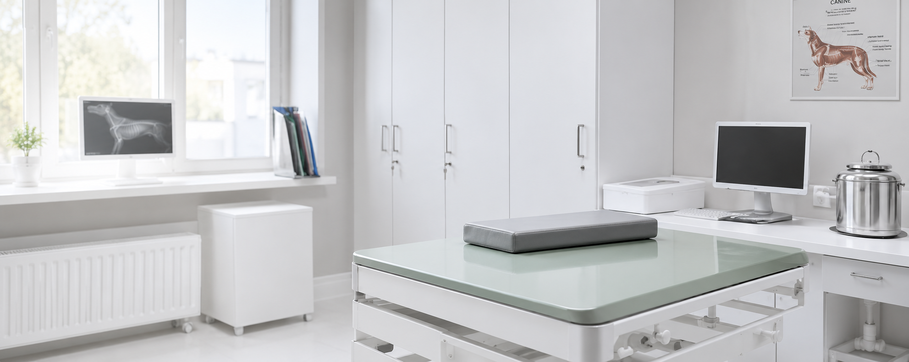
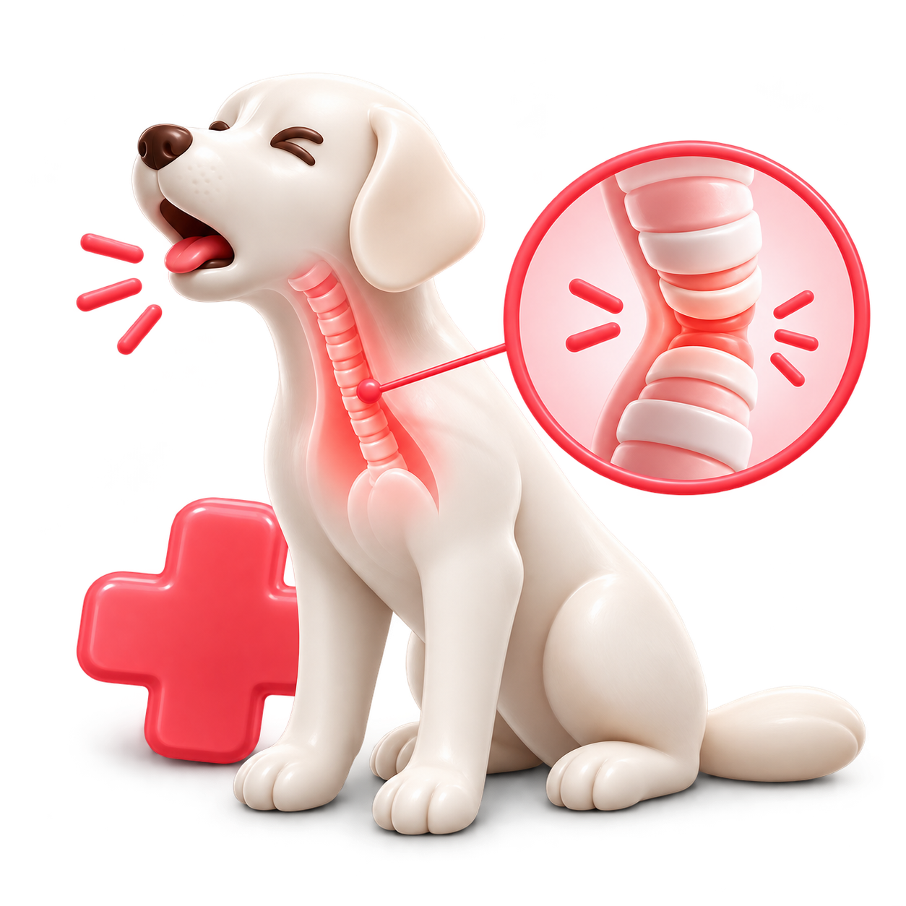
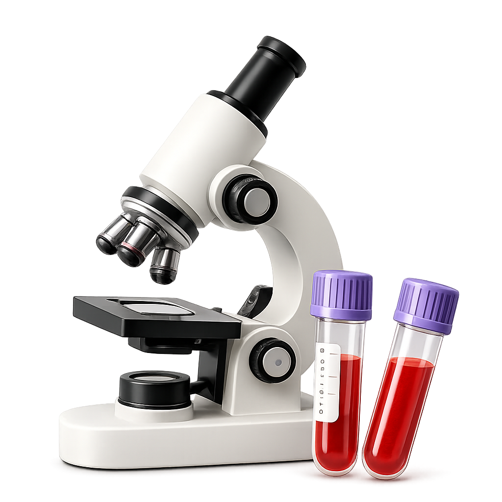

Отделение филиала Ходынка, Dr.Hug
дек. 2023 г. — сейчас · 3 года и 7 месяцев
Заведующий отделением, ветеринарный врач в ветеринарном центре Dr.Hug.

Вед. гастроэнтеролог, научный руководитель
Факультет ветеринарной медицины · 2013 г.
С самого детства я любил животных и всегда знал, что хочу связать с ними свою жизнь.
Сегодня моя главная цель — не только лечить питомцев, но и помогать их владельцам чувствовать уверенность на каждом этапе лечения. Для меня важно найти причину проблемы, подобрать оптимальное решение и сделать процесс лечения максимально понятным и комфортным.
Я регулярно повышаю квалификацию, изучаю современные методики и убежден, что внимательное отношение, профессионализм и забота — основа успешного результата.
дек. 2023 г. — сейчас · 3 года и 7 месяцев
Заведующий отделением, ветеринарный врач в ветеринарном центре Dr.Hug.
янв. 2024 г. — май 2024 г. · 5 мес.
2015 — 2016 г.
2024 г. — сейчас
Признаки коллапса трахеи, методы диагностики и варианты помощи собакам с затрудненным дыханием.

Надежная защита от опасных инфекций. Используем современные и безопасные вакцины для собак и кошек.
Диагностика и лечение острых и хронических заболеваний собак и кошек с индивидуальным подбором терапии.
Анализы крови и другие исследования с быстрыми результатами для точной постановки диагноза.
